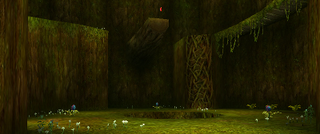
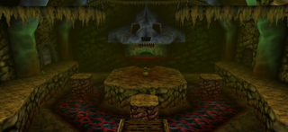
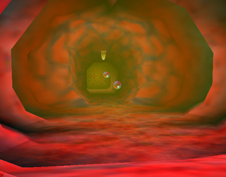
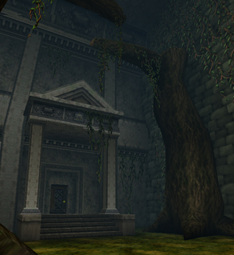
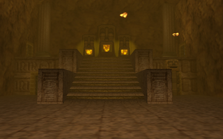
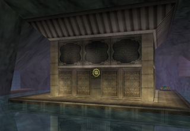
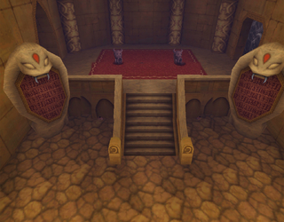
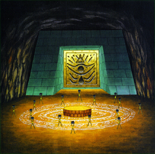

|  |
Inside the Deku TreeLe premier donjon de la portion enfant dans The Legend of Zelda: Ocarina of Time. C'est l'intérieur du grand gardien de la forêt Kokiri, le grand arbre Mojo. Lorsque l'arbre contracte une maladie mystérieuse, Link s'aventure à l'intérieur pour détruire le fléau de l'arbre et briser la malédiction de Ganondorf, étant la reine Gohma, premier bosse dans The Legend of Zelda: Ocarina of Time. Après avoir vaincu la reine Gohma, l'arbre Mojo donne la Link la premier pierre spirituelle, l'Émeraude Kokiri, et succombe à la malédiction de Ganondorf. |
|  |
Dodongo's CavernLe deuxième donjon de la portion enfant dans The Legend of Zelda: Ocarina of Time. Cette caverne, située à mi-chemin du sentier de Death Mountain, est le deuxième donjon que Link doit visiter afin d'acquérir la deuxième pierre spirituelle, le Rubis Goron. Link, qui vient à Death Mountain pour obtenir la pierre spirituelle, est contrairement à Ganondorf, capable de gagner la confiance du chef Darunia et des Gorons. Mais avant de lui remettre le Rubis Goron, Darunia donne à Link comme mission de vaincre le Roi Dodongo, caché dans les profondeurs de la caverne Dodongo. |
|  |
Inside Jabu-Jabu's BellyLe troisième et dernier donjon de la portion enfant dans The Legend of Zelda: Ocarina of Time. Le donjon est situé à l'intérieur de ventre du seigneur Jabu-Jabu, qui passe la plupart de ses journées à la Fontaine Zora. Pour entrer, Link doit déposer un poisson de sa bouteille par-terre devant le seigneur Jabu-Jabu, ce qui l'oblige à ouvrir sa bouche et à aspirer à la fois le poisson et Link à l'interieur de son ventre. Link à pour mission, alors qu'il est à la recherche de la dernière pierre spirituelle, le Sapphire Zora, d'aller sauver Ruto, la princesse des Zoras. |
|  |
Forest TempleLe quatrième donjon, et premier donjon de la portion adulte dans The Legend of Zelda: Ocarina of Time. Un vieux château abandonné, situé au fond de Lost Woods, dans un endroit peu connu des Kokiris, connu sous le nom de Sacred Forest Meadow. Après être abandonnée par ses habitants d'origine, la forêt a repris le contrôle de la structure et les monstres de la forêt naviguent maintenant dans les couloirs du château abandonné. Link doit voyager vers le Temple de la Forêt pour sauver son amie d'enfance Saria, seulement pour éveiller à son rôle de Sage de la Forêt. Mais avant de sauver Saria, Link doit vaincre le fantôme qui hantent le Temple de la Forêt, Phantom Ganon. |
|  |
Fire TempleLe cinqième donjon, et deuxième donjon de la portion adulte dans The Legend of Zelda: Ocarina of Time. Le Temple du Feu est un temple Goron où les Gorons prient les esprits des montagnes et du feu, dans les cratère de Death Mountain. À l'aider de sa tunique de Goron, Link devra s'aventurer au fond des cratères de Death Mountain pour détruire le dragon Volvagia, l'empêcher de s'échapper du Temple et de transformer Hyrule en un désert brûlant, et sauver son vieux ami Darunia, qui révèle à Link être le Sage du Feu. |
|  |
Water TempleLe sixième, et troisième donjon de la portion adulte dans The Legend of Zelda: Ocarina of Time. Le Temple de l'Eau, un ancient temple sacré gardé par les Zoras qui se trouve au profondeur du Lac Hylia, utilisé pour vénérer les esprits de l'eau. Pendant que Link était piégé dans le Royaume Sacré pendant sept ans, Ganondorf, maintenant devenu le Roi du Mal, gela le Domaine Zora et maudit le Temple de l'Eau avec une amibe d'eau appelée Morpha. Link aura pour but de vaincre Morpha et sauver la Princesse Ruto. Après la défaite de Morpha, le Lac Hylia est restauré et la Princesse Ruto se réveille en tant que Sage de l'Eau. |
|  |
Spirit TempleLe septième, et quatrième donjon de la portion adulte dans The Legend of Zelda: Ocarina of Time. Situé dans la zone la plus à l'ouest du Colosse du Désert dans le désert hanté, le Temple des Esprits était utilisé comme quartier général par Nabooru, commandante en second des Gerudos, jusqu'à ce que Ganondorf accède au pouvoir, devenant une base d'opérations pour le Roi des Voleurs et les sorcières de Ganondorf, Koume et Kotake. Link devra voyager dans le temps pour traverser le Temple des Esprits, vaincre la forme combinée de Koume et Kotake, la sorcière du Feu et de la Glace Twinrova, et réveiller le Sage des Esprits qui se révèle être Nabooru. |
|  |
Shadow TempleLe huitième et dernier donjon dans The Legend of Zelda: Ocarina of Time. Situé à l'arrière du cimetière du village Kakariko, le Temple de l'Ombre à été construit par les Sheikahs à des fins inconnues. Lorsque la bête de l'ombre fantôme, Bongo Bongo, s'échappe de sa prison au fond du puit des trois traits du village Kakariko où il était scellé par Impa, elle se retire dans une grande chambre dans les recoins sombres du Temple de l'Ombre. Impa décide de retourner au temple pour tenter de sceller à nouveau Bongo Bongo. Link devra se diriger au Temple de l'Ombre pour aider Impa dans sa quête, et devra affronter Bongo Bongo. Après sa défaite, le Temple de l'Ombre est nettoyé du mal et Impa se réveille en tant que Sage de l'Ombre. |